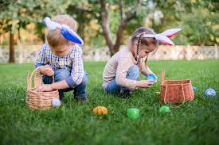
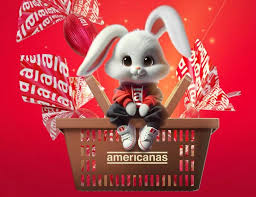
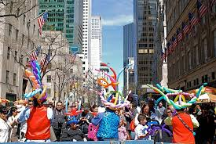

Celebração da Páscoa nos Estados Unidos
Nos Estados Unidos, a Páscoa é uma festa familiar e secular, com ênfase em tradições como a caça aos ovos de Páscoa. Milhões de famílias organizam caças aos ovos coloridos escondidos no jardim, onde crianças competem para encontrar o maior número possível.
O coelho da Páscoa é uma figura central, simbolizando a entrega de cestas com ovos de chocolate e doces. Paradas e desfiles, como o Easter Parade em Nova York, atraem multidões, combinando moda, música e celebração comunitária.
Embora haja um aspecto religioso, especialmente nas igrejas protestantes e católicas, a Páscoa americana incorpora elementos comerciais, com lojas decoradas e promoções especiais. É um momento para reuniões familiares, piqueniques e a renovação da primavera.



